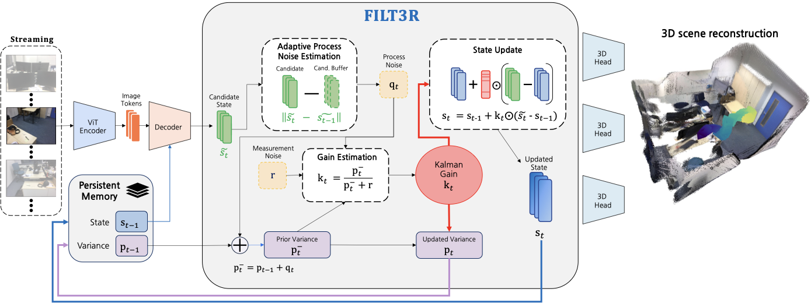
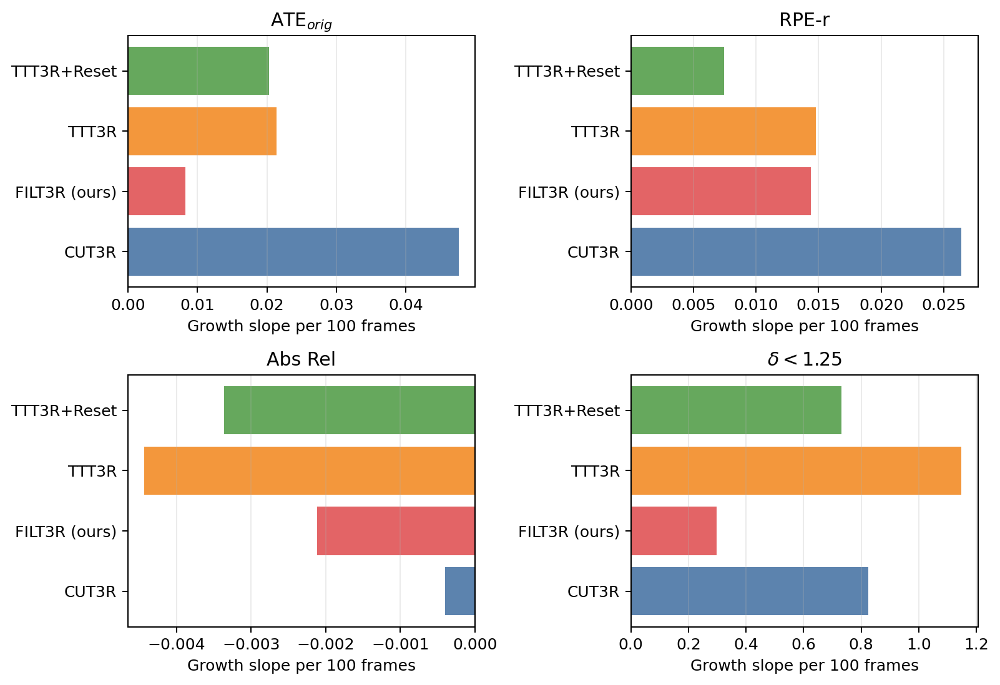
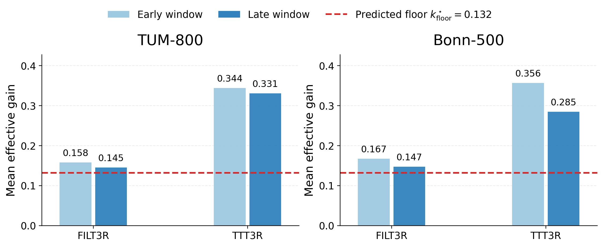
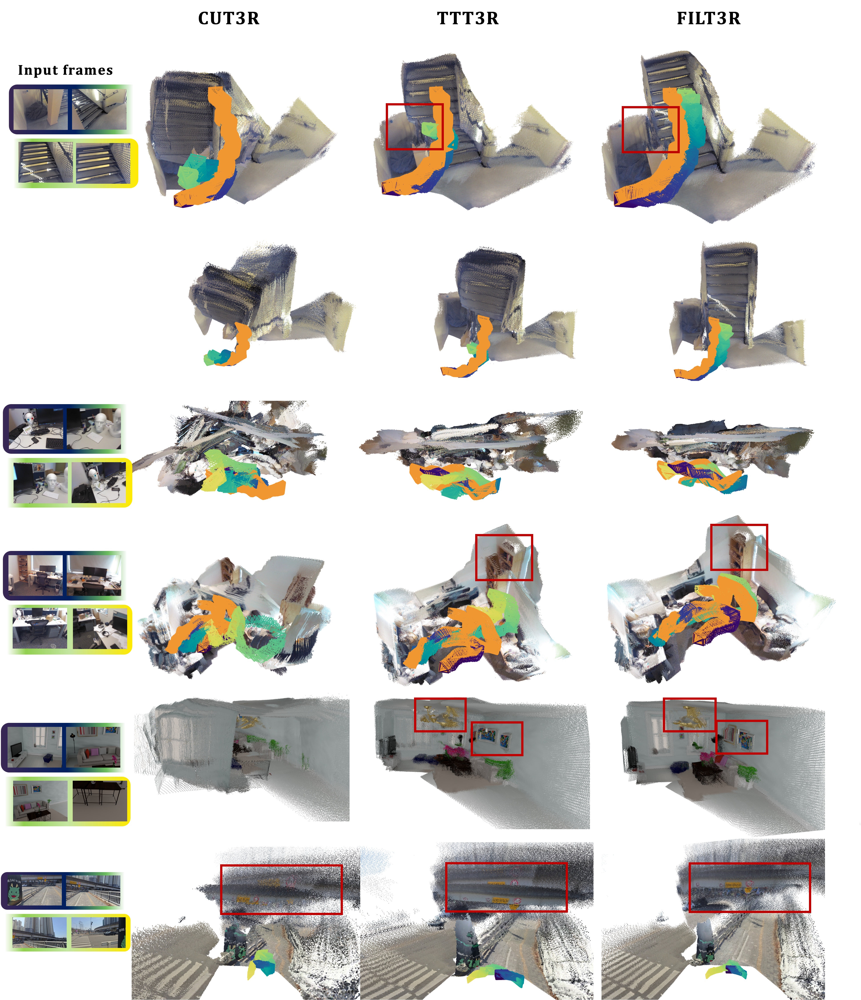

Drift-aware process noise
Consecutive candidate tokens are compared and normalized with an EMA baseline to estimate token-wise process noise.
Latent State Adaptive Kalman Filter for Streaming 3D Reconstruction
1KAIST AI
arXiv 2026
Streaming 3D reconstruction maintains a persistent latent state that is updated online from incoming frames, enabling constant-memory inference. A key failure mode is the state update rule: aggressive overwrites forget useful history, while conservative updates fail to track new evidence, and both behaviors become unstable beyond the training horizon.
FILT3R addresses this by casting recurrent latent updates as stochastic state estimation in token space. It maintains a per-token variance, computes a Kalman-style gain, and estimates process noise online from EMA-normalized temporal drift of candidate tokens. The update is training-free and improves long-horizon stability for depth, camera pose, and 3D reconstruction without retraining the backbone.
Consecutive candidate tokens are compared and normalized with an EMA baseline to estimate token-wise process noise.
Instead of applying a fixed overwrite rate, FILT3R carries forward latent uncertainty as evidence accumulates over the stream.
A Kalman-style gain determines how much of each candidate state should be integrated into the persistent latent memory.

| Benchmark | Metric | Baseline | FILT3R | Observation |
|---|---|---|---|---|
| TUM-800 | ATE orig | TTT3R: 0.214 | 0.107 | Long-horizon pose drift is roughly halved. |
| Bonn-500 | Abs Rel | TTT3R: 0.100 | 0.089 | Metric depth remains stable beyond the training horizon. |
| Bonn-500 | delta < 1.25 | TTT3R: 92.1 | 94.4 | More pixels stay within the correct metric depth band. |
| 7-Scenes-1000 | Accuracy | TTT3R: 0.145 | 0.054 | Reconstruction gains compound with rollout length. |
Reconstruction highlight 1.
Reconstruction highlight 2.
Taylor update diagnostic.
TUM-800 update diagnostic.

Error-growth slope summary.

Gain-floor diagnostic.

Qualitative reconstruction comparison over long rollouts.
@misc{jin2026filt3r,
title = {FILT3R: Latent State Adaptive Kalman Filter for Streaming 3D Reconstruction},
author = {Jin, Seonghyun and Ye, Jong Chul},
year = {2026},
note = {arXiv preprint arXiv:2603.18493}
}